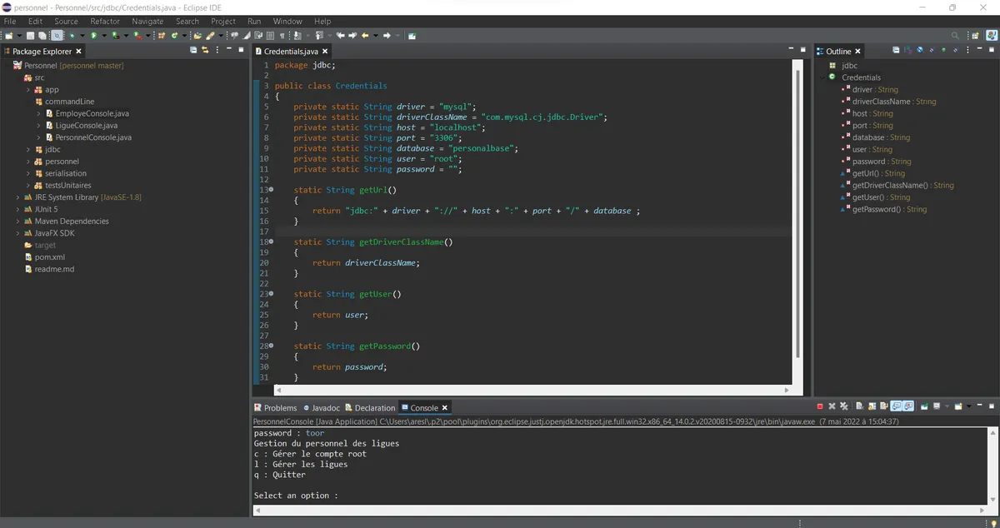
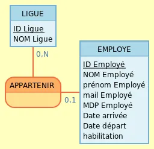
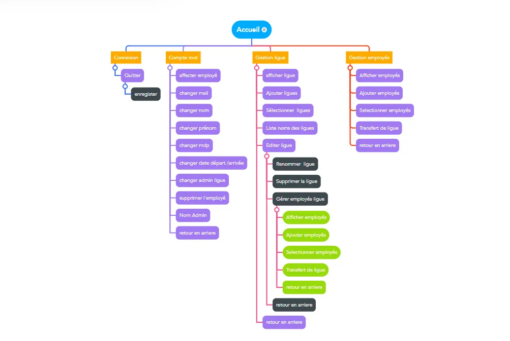
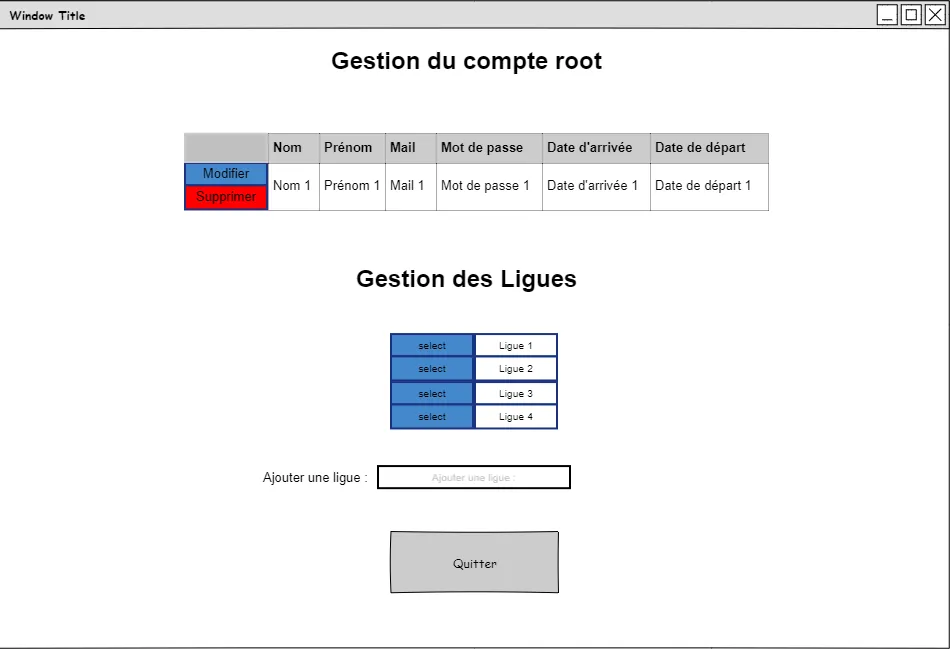
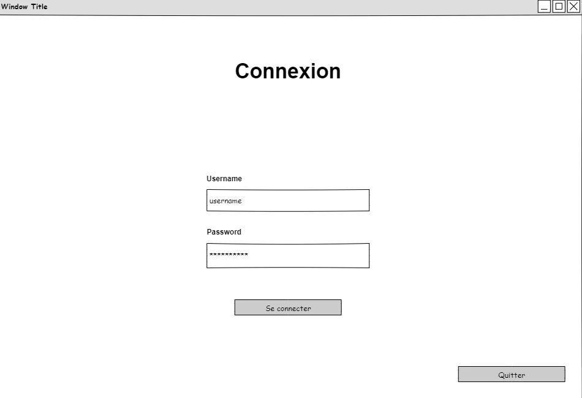
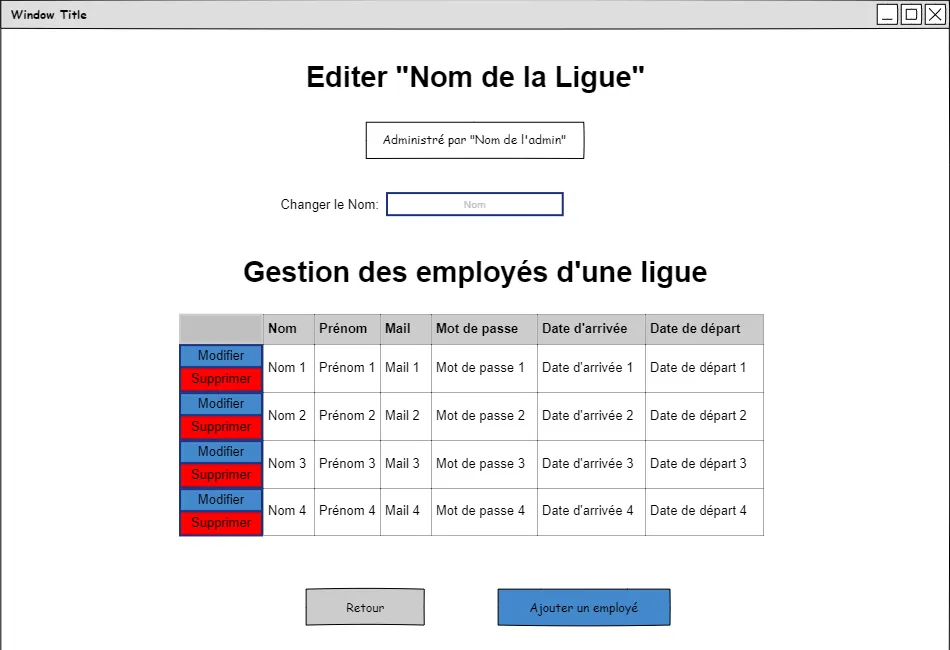

Modeling and testing
- Database modeling with a conceptual data model (MCD)
- Unit tests to check that the application works correctly
- Handling each employee's start and departure dates
- Mind map of the command-line menus
// BTS SIO · Java professional workshop · team project
Turning a command-line Java application that only one person could use into a multi-user application with a database, three permission levels and a graphical interface.
A manager at the Maison des Ligues (M2L), a sports leagues organization, uses an application to manage the leagues' employees. It only runs from the command line and can be used by just one person at a time. The goal: appoint an administrator for each league, responsible for registering that league's employees.

Passerelle to handle the database connection with JDBC



